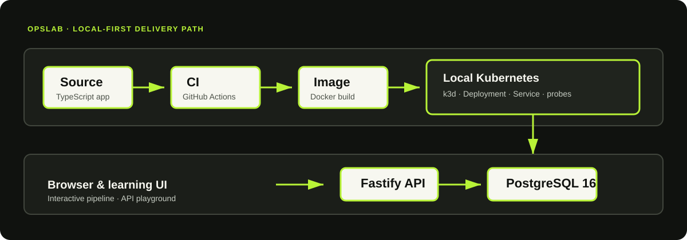

Local-first
Run the full stack on a laptop with Docker Compose, PostgreSQL, and the app itself. It feels production-shaped while staying accessible.
LOCAL-FIRST DEVOPS LAB
OpsLab is a hands-on, opinionated learning environment for understanding how a service moves through source control, CI, containers, health checks, Kubernetes, and infrastructure as code.
WHY THIS EXISTS
Run the full stack on a laptop with Docker Compose, PostgreSQL, and the app itself. It feels production-shaped while staying accessible.
See the same concepts that appear in real teams: CI gates, container images, networking, health probes, and infrastructure definitions.
Use the lab to observe what breaks, how readiness differs from liveness, and what a rollout or a failing dependency actually looks like.
SYSTEM MODEL

Git plus a GitHub Actions workflow exercises install, lint, tests, and image build.
Fastify serves the app and exposes health and metrics routes for live inspection.
PostgreSQL holds the lab’s service and incident records to model dependency behavior.
Docker, Compose, Kubernetes manifests, and Terraform show how the system scales across stages.
LEARNING PATH
See the difference between an image and a running container and how Docker layers affect rebuild behavior.
Understand why liveness and readiness are separate signals and when Kubernetes should restart or drain traffic.
Model the deploy path and understand how safe rollouts preserve service while changes move through the cluster.
Use Terraform to declare desired resources and compare the live cluster with configuration state.
RUN IT
git clone https://github.com/<your-account>/opslab.git
cd opslab
cd app
npm install
npm run devThen open http://localhost:3000 and explore the interactive pipeline and API playground.
For the full stack with PostgreSQL: docker compose up --build